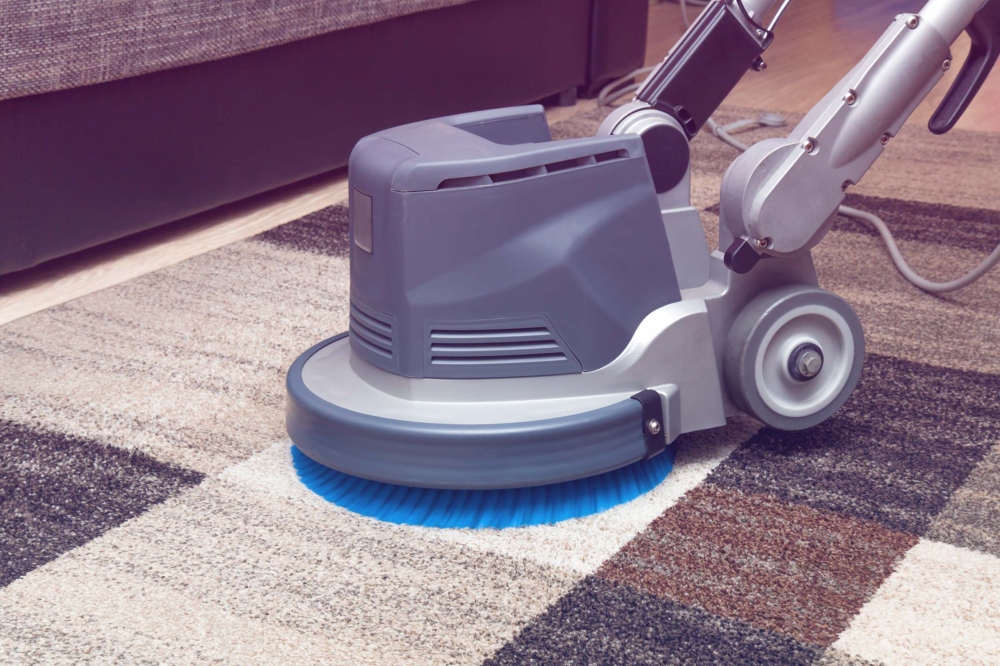

Using A Professional Carpet Cleaning Service

It is advisable to think about hiring an expert carpet cleaner if the
carpet makes you look embarrassed when guests arrive at your residence
or if you want to keep a professional appearance at your showroom or
office. Utilizing the correct method for cleaning the carpets will
bring about a significant improvement in their appearance , as well as
their longevity and, in the case of an enterprise - your earnings!
Potential clients, when confronted with dirty carpets, are thinking about whether you have similar lazy and unprofessional approach to work and are likely to be skeptical about taking your services or purchasing your products. Cleaning the carpets in your office is now less important when contrasted with the expense of losing business, whether it's future or even current.
When your carpets are deep cleaned, they will be restored to their original shine and softness without the need for harsh chemicals that could damage the carpet. Also, you don't need to wait for long periods of time for carpets to dry like you would if you used the conventional carpet cleaner.
Professional Carpet Cleaning Burleson will clean your carpets all the way all the way to the base. The most common methods used include steam or hot water however, there's now an alternative. Carpet cleaning systems with low moisture are now able to remove your carpet completely and thoroughly, leaving them dry enough for use immediately.
This type of system permits both your household and you - or your clients - to to walk across carpets in a matter of minutes after they have had been cleaned. Imagine how vital this would be for the guest house or hotel! These methods that are low in moisture employ the most effective of different methods available to provide an option that doesn't damage the carpet's fibers in the way that traditional cleaning methods are able to do or soak the carpet and floor beneath it if the collection system isn't effective as it ought to be.
Cleaning your carpet with low-moisture - also known as dry carpet cleaning can effectively clean your carpet and efficiently. It can remove dirt from a wool carpet without soaking it or making the fibres shrink, or synthetic fibre carpets without damaging the fibres, or discoloring the colors.
Also, it won't cause water damage to your flooring or the underlay beneath, which can raise dirt that has been stuck between the floorboards the concrete or the underlay, up into the carpet. Have ever wondered why the liquid that gets spilled onto your carpet can cause more damage than you expected? Wet cleaning techniques can break down the dirt between the floorboards and underlay and pull it into your carpet.
This is not the case with the new methods that use very low moisture by professional Carpet Cleaning Burleson companies. Carpets are cleaned efficiently, quickly and you are able to use it immediately following cleaning. If your carpet is at home, you are able to have it cleaned, and then immediately use it without the need to tie your children up to keep them from getting out!
Another benefit of modern ultra-low moisture cleaning techniques is that they're extremely safe for pets and children particularly if you select one that is independently verified, such as with Green Seal or a similar independent body. They can also decrease dust mites, dust and allergens by as much as 90 percent. If you or someone in your family or employees suffer from asthma and need a professional carpet cleaning service for them. Additionally, you are viewed as an honest employer.
There are many different carpet
cleaning solutions that are available, however modern technology can be
a boon in this regard and more people and employers must consider
finding out the solutions available to ease the burden for them.
Professional carpet cleaning services that make use of the latest
technology are an excellent illustration of this.